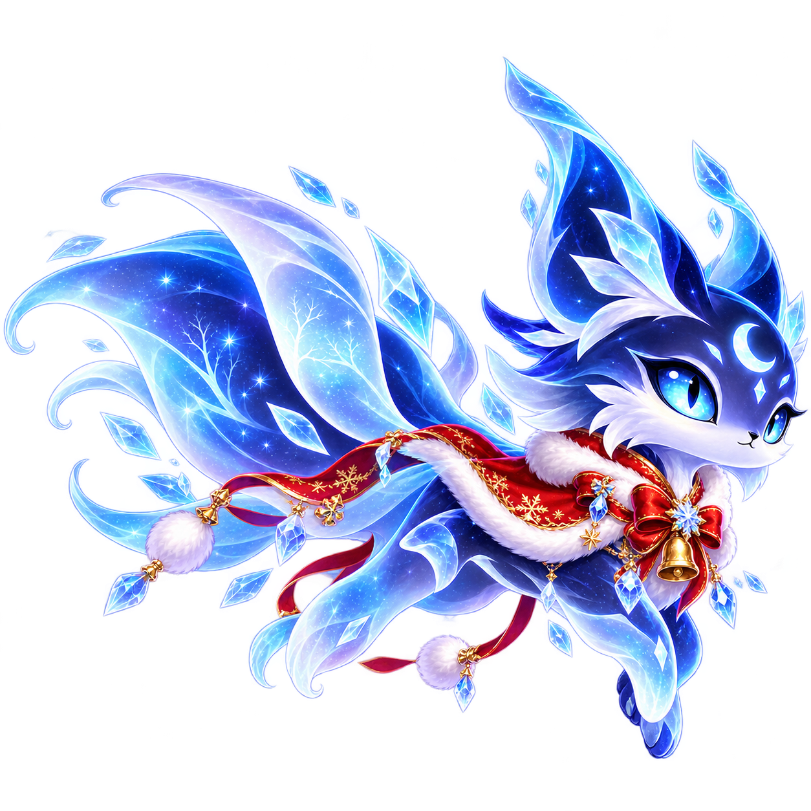
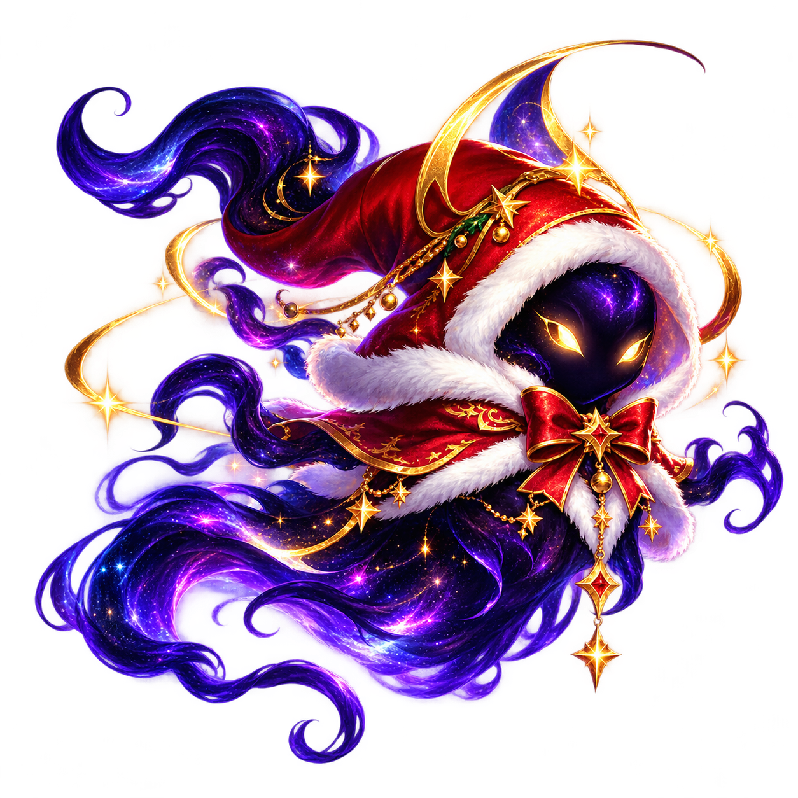

Joueur · Joueur✧ 0 Éclats nocturnes
UNE NOUVELLE NUIT COMMENCE
Lueur
Nocturne
La nuit a oublié ses étoiles.
Deviens la petite lueur qui les réveille.
0 Fragments de Noël
Les esprits de Noël
Du 1er au 31 décembre 2026 · heure de Paris.
Une fois acquises, jouables toute l’année.

Solstice
Traversée d’UmbraV0.9 · SOLO · PC, TABLETTE & MOBILE
✦
Trois sanctuaires. Un ciel à rallumer.
Récolte, grandis, puis offre ta lumière.
NYX · ESPRIT LUNAIRE